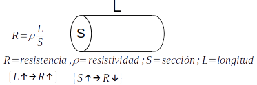
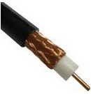

Perturbaciones en la transmisión de datos¶
Atenuación¶
Se refiere a la atenuación de la señal debido a la resistencia eléctrica que presenta tanto el canal de transmisión como el resto de los elementos
Interferencias¶
Las señales procedentes de otras transmisiones pueden interferir o darse en nuestras transmisiones. Esto ocurre cuando la señal de un circuito se acopla a otro circuito debido al efecto de la inducción electromagnética. Vemos un ejemplo en el acoplamiento entre pares de cables o en el cable coaxial, hacemos una apantallamiento «jaula de Faraday»
Ruido (Calor)¶
Perturbación aleatoria, puede ser debido a muchas causas como, vibraciones térmicas de los componentes del sistema, perturbaciones atmosféricas, motores, etc …